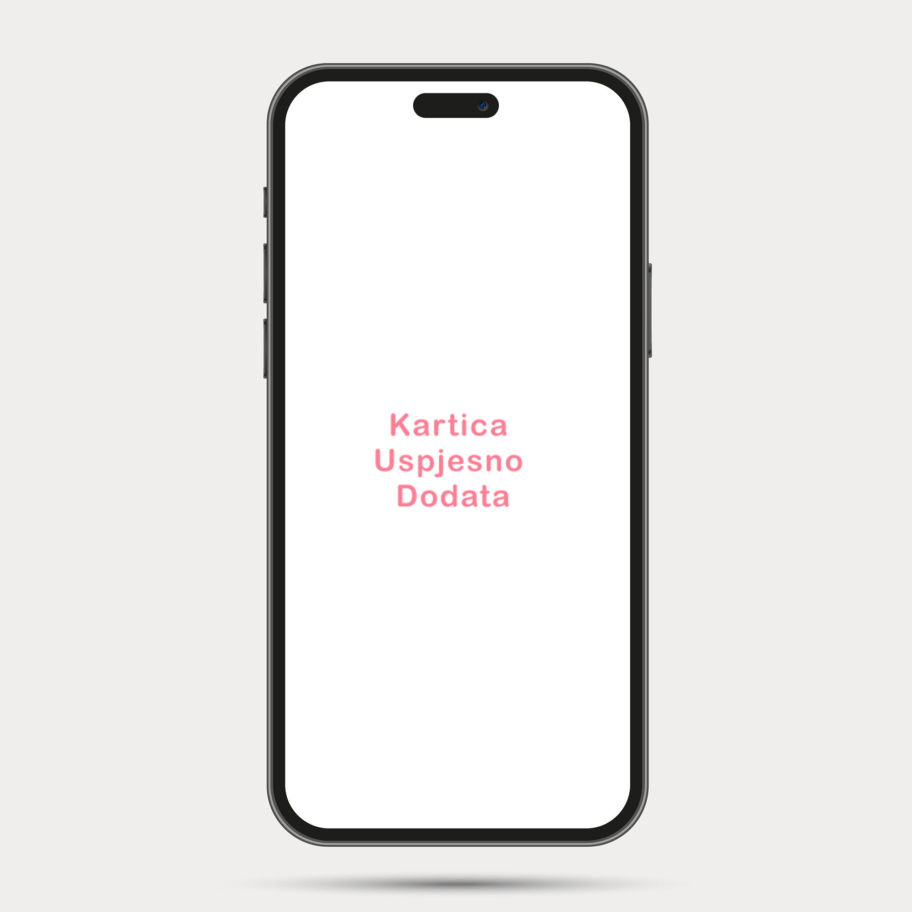
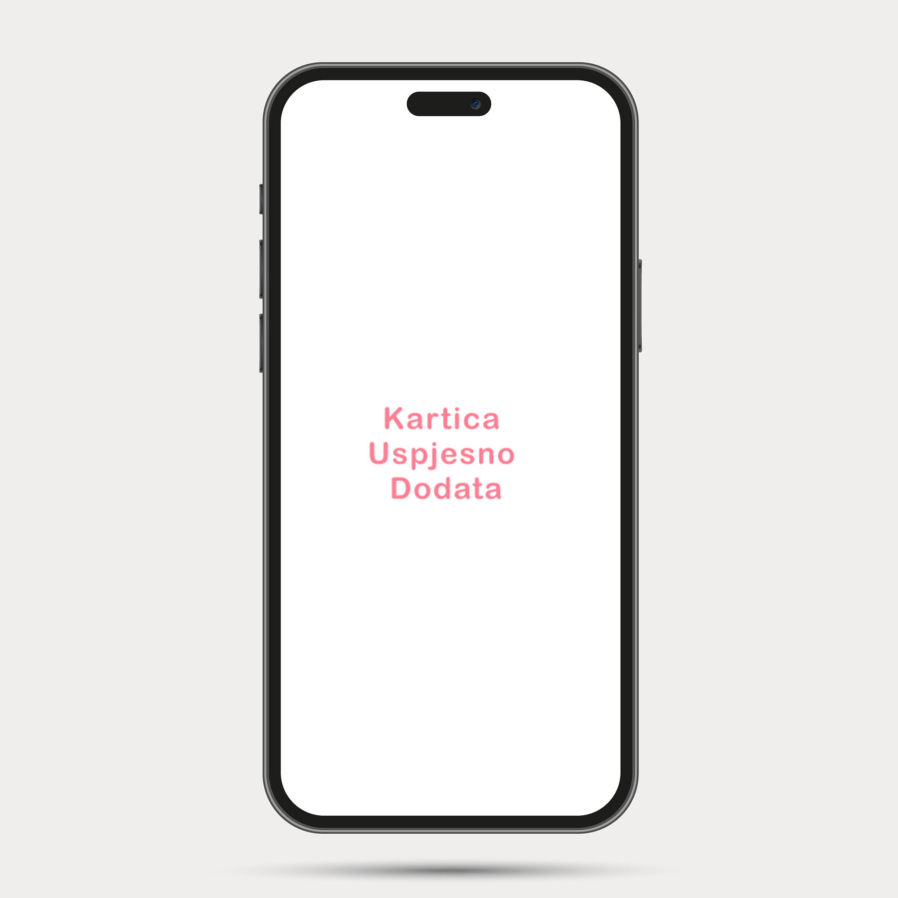

Role & Responsibilities
Solo UI/UX Designer
• Research
• Prototyping
• Usability Test
• Visual Design
Overview
It's really hard for small cities to have a simple and reliable way of transport without spending too much financial resources. Yomo was created as a solution to this problem and it offers a simple way of navigating through the city, doing good both for the city and the users.
It has two types of users:
• Drivers who look for potential users who are looking for a
driver at the given moment.
• Riders who look for currently available drivers.
When driver leaves the rider at their targeted last stop, both of
them have the ability to rate their experience on each other,
making the app very user friendly.
Context
This is my first project on a team. My job was to do research on what is really needed in our local city and when it was later decited to make a simple UI/UX prototype for the choosen app. This was also my first time working in AdobeXD and getting fammiliar with the abilities that the software has to offer.
Prototype
 

Full App:
You can find the full app including documentation and user flow diagrams on this link: Yomo